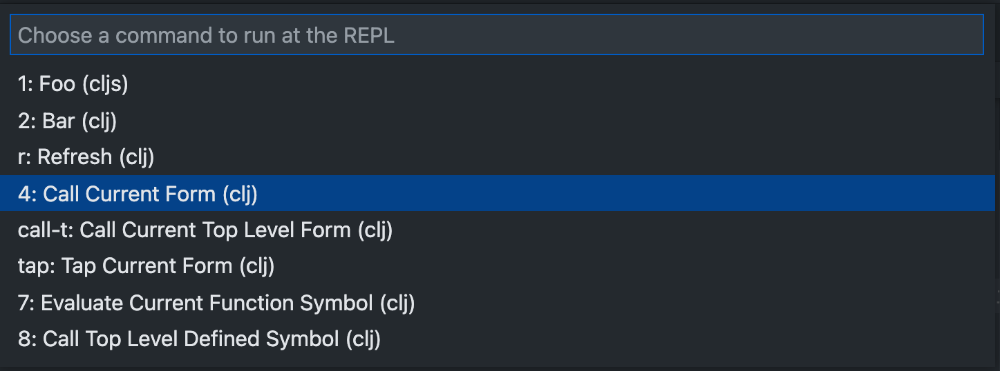

Custom REPL Commands
Calva supports configuration of custom command snippets that you can evaluate in the REPL at will. This is useful if your workflow has you repeatedly evaluating a particular piece of code. There are two ways to use these:
- You can use the setting
calva.customREPLCommandSnippetsto configure it. Then either bind keyboard shortcuts to them or use the command Run Custom REPL Command to access it. The command will give you a menu with the snippets you have configured. - You can bind a keyboard shortcut directly to a custom command snippet by inlining it in the shortcut definition. See Binding Keyboard Shortcuts
Joyride
For some use cases you might be better served by/want to combine these with using the VS Code Extension API, and that of Calva, or any other extension, through Joyride.
The calva.customREPLCommandSnippets is an array of objects with the following fields (required fields in bold):
name: The name of the snippet as it will appear in the picker menusnippet: The code that will be evaluatedkey: A key can be used to reference the snippet from Run Custom REPL Command keyboard shortcut arguments. It will also be used in the quick-pick menu.ns: A namespace to evaluate the command in. If omitted the command will be executed in the namespace of the current editor.repl: Which repl session to use for the evaluation. Either"clj"or"cljs". Omit if you want to use the session of the current editor.evaluationSendCodeToOutputWindow: (defaulttrue) Whether the evaluated code should be echoed to the Output/REPL window.
There are also substitutions available, which will take elements from the current state of Calva and splice them in to the text of your command before executing it. They are
$line: Current line number in editor$column: Current column number in editor$file: Full name of the current file edited$file-text: The text of the current file edited$ns: The namespace used for evaluating the command$editor-ns: The namespace of the editor from which the command was run$selection: The currently selected text$current-form: The text of the current form$current-pair: The text of the current pair if in a binding, otherwise empty string$enclosing-form: The text of the current enclosing form$top-level-formThe text of the current top level form$current-fn: The sexpr/form at call position in the current list, e.g.strwith(defn foo [] (str "foo" "bar|"))$top-level-defined-symbol: The second symbol of the top level form, e.g.foowith(defn foo [] (str "foo" "bar|"))$head: The text between the start of the current list to the cursor$tail: The text between the cursor and the end of the current list
User and Workspace Settings
Settings from your User (global) level and the workspace are merged.
With these User settings:
"calva.customREPLCommandSnippets": [
{
"name": "Call Current Form",
"key": "c",
"snippet": "($current-form)"
},
{
"name": "Call Current Top Level Form",
"key": "t",
"snippet": "($top-level-form)"
},
{
"name": "CLJ Test Top Level Defined Symbol",
"repl": "clj",
"snippet": "(clojure.test/test-var #'$top-level-defined-symbol)"
},
{
"name": "CLJS Test Top Level Defined Symbol",
"repl": "cljs",
"snippet": "(cljs.test/test-var #'$top-level-defined-symbol)",
"key": "tab"
}
],
And these Workspace settings:
"calva.customREPLCommandSnippets": [
{
"name": "Remount CLJS App",
"key": "r",
"repl": "cljs",
"ns": "example.app",
"snippet": "(start)"
}
],
Issuing Run Custom REPL Command will then render this VS Code menu:

The default keyboard shortcut for the command is ctrl+alt+space space. (Beware: on MacOS it may conflict with the default shortuct for Input Sources - Select next source in Input menu.)
Binding Keyboard Shortcuts
There are four ways to bind shortcuts to custom commands:
- Use a predefined
keyshortcut. These are predefined asctrl+alt+space <something>, where<something>is one of:- The digits
0through9 - The English letters
athroughz - Arrow keys
right,left,up, ordown - One of
tab,backspace,,,., or-
- The digits
- Bind
calva.runCustomREPLCommandto a shortcut with whatever code you want to evaluate in theargsslot. You have access to the substitution variables here as well. - Bind
calva.runCustomREPLCommandto a keyboard shortcut referencing thekeyof one of yourcalva.customREPLCommandSnippets. (If not using any of thekeys mentioned in 1.) - Bind
calva.runCustomREPLCommandto a shortcut with acustomREPLCommandSnippetsin theargsslot. You have access to the substitution variables here as well.
Here's an example shortcut entry for the 4th option:
{
"key": "ctrl+cmd+u alt+enter",
"command": "calva.runCustomREPLCommand",
"args": {
"ns": "user",
"snippet": "$current-form",
}
},
This would evaluate the current form in the user namespace. Please note that this Custom REPL Command will not show up in the custom commands menu mentioned above.
Custom REPL Hover Snippets
Calva supports custom snippets that will display their result inside the tooltip. They will only work when connected to a repl, since they eval code in it. This is mostly useful for tooling authors that want to integrate with calva. Be careful with these, since they will be executed anytime Calva displays a tooltip. So they should be fast and probably not have any side effects.
The hover snippets accept the same inputs as the Custom REPL Commands, except for the hotkey:
"calva.customREPLHoverSnippets": [
{
"name": "eval text on hover",
"repl": "clj",
"ns": "example.app",
"snippet": "(str \"$hover-text\")"
}
]
With this setting anything the mouse is over will also be shown inside its tooltip.
There are now also hover- versions of most substitutions. Those currently only work inside the hover snippets.
config.edn
:customREPLCommandSnippets and :customREPLHoverSnippets can be also be configured in your user config at .config/calva/config.edn realative to your system home directory, or .calva/config.edn relative to the workspace root. Three things to note about this:
- None of these two configs get synced through VS Code Settings Sync.
- Changes to workspace
.calva/config.ednwill be automatically noticed by Calva, and refresh the config. This will not happen with the user config file. - Internally in Calva, the settings are keyed on the snippet
:nameentry, and if you change the name, the old entry won't be removed until the VS Code window is reloaded.
As for 2.: There is a command Calva: Refresh REPL snippets from User config.edn.
There is also a command to open the User config.edn, for convenience: Calva: Open REPL snippets User config.edn. This command creates the file if it doesn't previously exist.
Snippets Inside Deps
A new experimental feature lets library authors ship snippets inside their jar files. These accept the same options as above but should be placed in "resources/calva.exports/config.edn" inside the jar.
{:customREPLCommandSnippets
[{:name "edn test"
:key "a"
:snippet ($current-form)}]
:customREPLHoverSnippets
[{:name "edn hover"
:snippet (str "$hover-tex")}
{:name "edn hover show val"
:snippet (str "### EDN show val\n```clojure\n" (pr-str (eval (symbol (str "$ns" "/" "$hover-top-level-defined-symbol")))) "\n```")}]}